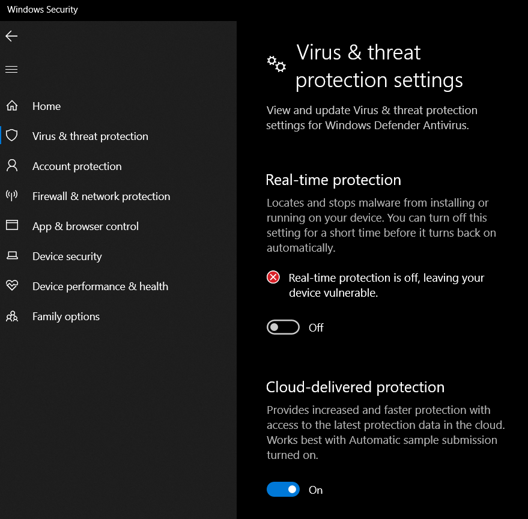

firstly we need to turn off Windows real time protection because vulnserver is blocked by Windows defender.

Now we need to start our vulnserver and immunity debugger as administrator we do that as administrator because immunity debugger can't see vulnserver if it's not started as administrator. Okay why we're running vulnserver as admin because when we get a shell this would be a root shell so to say.

it should looks like this.
once we start our immmunity debugger we need to attach vulnserver to it.
go to immunity file > attach > find vulnserver from list and attach it.

it looks like this.
we need to turn that running from highlighted button.
now we are good to go let's go to our attack machine and connect to vulserver through netcat(vulnserver is running on port 9999 by default and we need to know our victim machine's ip in this case this is my main machine ip.)

in here actually TRUN command is vulnerable and we'll learn how to we find that TRUN itself is vulnerable. For that we're going to do spiking. And we'll actually pick a command for example STATS and then we throw bunch of characters one at a time to STATS and see if we can overflow that buffer that we talked about in the previous lesson.
If when we overflow the buffer the program crash then we find out that STATS is vulnerable. If it doesn't crash then we'll move on the next one.
Now for that we'll use a tool called generic_send_tcp let's look at it and see what is its usage?
Okay

we already know host and port we need to a spike script and specify these SKIPVAR and SKIPSTR parameters which will be 0
TCM has written this spike script already let's look at


we're gonna send all kinds of different characters randomly essentially to try to break this part of the program.
we'll send this script to victim's machine.

and while this send variables we need to se what happens in immunity debugger.

there is nothing unusual so this is not looking like vulnerable.
now let's look at TRUN spiking.
TRUN spike script should looks like this

let's send this and see what happens in immunity.

immunity starts blinking immediately.

And yes this command is vulnerable.
let's try to start again with previous button.

message is clear i think.

we sent a bunch of A and we overwrote EIP and EBP most importantly EIP
Further Reading
(https://resources.infosecinstitute.com/intro-to-fuzzing/)